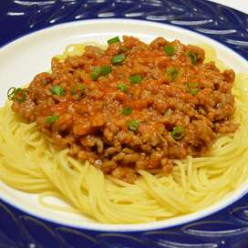

Spaghetti

Description
A hearty spaghetti that is sure to leave you satisfied.
This receipe is made in the traditional New York style of my grandparents. It is chock full of tasty ground beef and fresh tomatoes. You will love it!
Ingredients
- 1 pound spaghetti
- 2 pounds ground beef
- 1 onion minced
- 1 (6 ounce) can tomato paste
- 2 (10.75 ounce) cans condensed tomato soup
Steps
- Bring a large pot of lightly salted water to a boil. Add pasta and cook for 8 to 10 minutes or until al dente; drain.
- In a large skillet over medium heat, cook ground beef with onion until meat is brown. Drain. Return meat mixture to pan
with tomato paste, tomato soup and water. Cook, stirring, until heated through and thickened, 5 to 15 minutes. Serve
over cooked pasta.